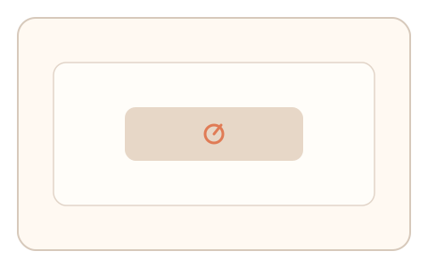

#179
Reverse Brainstorming - Round 4
已扩展
帧锁反制
在关键帧触发响应要求，判定基于反应时与帧同步一致性。
概念原文
采用渲染帧锁机制，在关键帧要求即时响应，系统以反应时与帧同步一致性判定。
代理渲染/回放难以在关键帧精准同步。
研究背景
关键帧同步依赖真实渲染时序，代理层或回放难以精确对齐。通过帧锁响应可检测渲染同步异常。
核心机制
- 在关键帧显示提示或目标。
- 要求用户即时响应。
- 记录响应相对帧时间的偏差。
- 检测帧同步一致性与抖动。
用户流程
- 步骤 1：用户观看帧级提示。
- 步骤 2：在关键帧内响应。
- 步骤 3：系统分析帧同步与反应时。
判定信号
帧对齐反应时
真实用户响应与帧同步存在自然窗口。
帧间响应抖动
回放难以复刻自然抖动。
判定逻辑
响应需落在帧同步窗口且抖动合理；过度精准或偏移判异常。
对抗面
- 脚本直接读取帧事件并触发
- 高帧率回放模拟
防御与缓解
- 随机化关键帧与提示形态
- 加入帧级微扰
- 与路径信号联合判断
可达性与风险
提供更宽的帧窗口与替代通道。
- 低帧率设备影响判定
- 视觉敏感用户不适
可视化状态

状态 1：关键帧提示
关键帧出现响应提示。
状态 2：即时响应
用户在帧窗口内操作。

状态 3：同步判定
分析帧同步与抖动。
参考资料
Vertical synchronization
说明帧同步与渲染时序。
Frame rate
说明帧级时序与窗口。